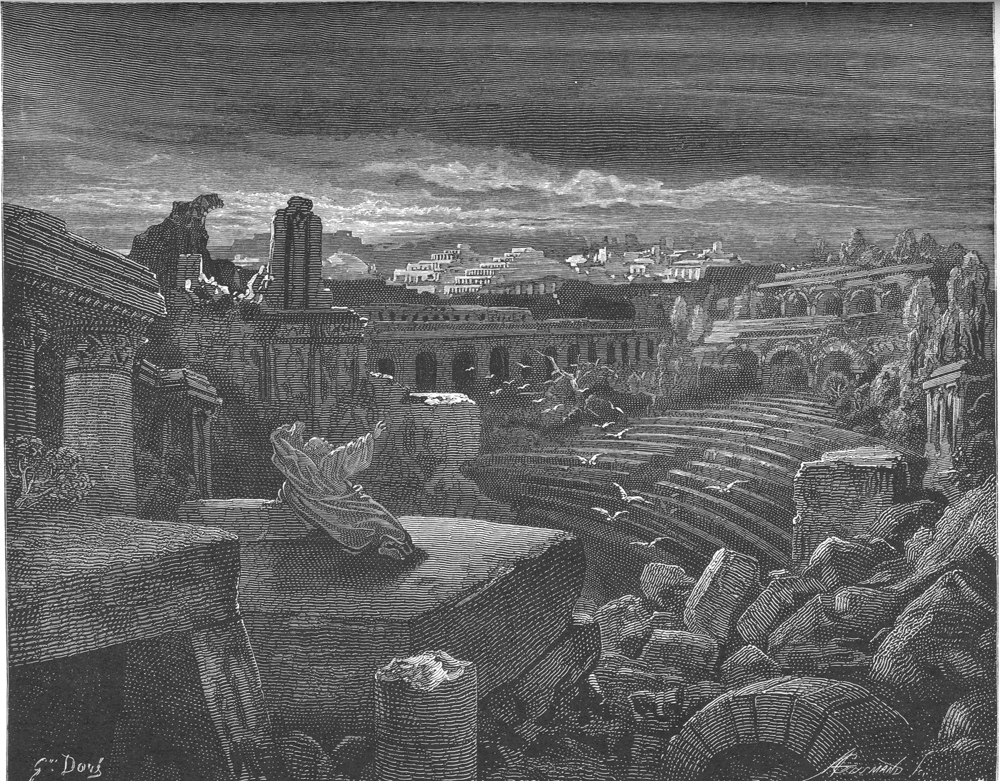

Isaiah 14 — The Mister Translation

Isaiah 13:1–22, the oracle just before this chapter, and the ruin of Babylon that the taunt of 14:4–23 celebrates. Doré drew the prophet and the ruins; the birds and the broken city are his, and the text names wild creatures that take over the ruin (13:21–22; 14:23). The engraving is the artist’s picture of the oracle, not a record of Babylon.

Translator's Notes — verse by verse
⭐ Compassion, and a stranger who joins. “and the stranger will join” stands in this one verse, nilvah ha-ger, and the house of Jacob is the one they attach themselves to. “On the land of Jehovah” stands in this one verse, the soil that belongs to him. The KJV has “the strangers shall be joined with them, and they shall cleave to the house of Jacob”, the NIV “Foreigners will join them and unite with the descendants of Jacob” and the NWT 1984 “the alien resident must be joined to them”.
⭐ Rest, three times. The verb nuach is in verse 1, vehinnicham, “and set them”; in verse 3, hani’ach, “gives you rest”; and in verse 7, nachah, “is at rest”. The KJV has “set them in their own land” where the NWT 1984 has “he will actually give them rest upon their soil”. And the reversal of verse 2: the peoples take Israel to its place, and then Israel takes them as servants, and they take captive their captors: the KJV has “they shall take them captives, whose captives they were”, the NIV “They will make captives of their captors and rule over their oppressors” and the NWT 1984 “must become the captors of” those who held them.
⭐ Rest from pain and hard service. The pain is me’otsbekha, “from your pain” (etsev), and the hard service is the phrase of Egypt, avodah qashah (Exodus 1:14, now on these pages). The KJV has “rest from thy sorrow, and from thy fear, and from the hard bondage”, the ASV “from thy sorrow, and from thy trouble, and from the hard service”, the NIV “relief from your suffering and turmoil and from the harsh labor forced on you”, the NWT 1984 “rest from your pain and from your agitation and from the hard slavery”, the Douay “rest from thy labour, and from thy vexation, and from the hard bondage” and the TLB “rest from sorrow and fear, from slavery and chains”.
⭐ This taunt. “This mashal” stands in five verses: here, Ezekiel 12:22 and 12:23 (now on these pages), and Ezekiel 18:2 and 18:3; a mashal is a proverb, a parable or a taunt, and it is said “against the king of Babylon”. It opens ekh, “how”, the cry of a lament (2 Samuel 1:19, now on these pages; Lamentations 1:1), and it opens again at verse 12. “How the oppressor has ceased” stands in this one verse, and “madhevah” stands in this one verse, a word that has never been settled. The KJV has “take up this proverb against the king of Babylon, and say, How hath the oppressor ceased! the golden city ceased!”, the NIV “you will take up this taunt against the king of Babylon: How the oppressor has come to an end! How his fury has ended!”, the NWT 1984 “How has the one driving [others] to work come to a stop, the oppression come to a stop!”, the Douay “How is the oppressor come to nothing, the tribute hath ceased?”, the Geneva “the gold thirsty Babel rested?” and the TLB “You bully, you! At last you have what was coming to you!”
⭐ The staff is broken. “Jehovah has broken the staff of the wicked” stands in this one verse, and “the rod of rulers” stands in this one verse; the oppressor is the nogesh, the taskmaster of Isaiah 9:3, whose rod is broken there too (now on these pages). The KJV has “The Lord hath broken the staff of the wicked, and the sceptre of the rulers” and “with a continual stroke”, the NIV “The Lord has broken the rod of the wicked, the scepter of the rulers” and “struck down peoples with unceasing blows” and the NWT 1984 “the one striking peoples in fury with a stroke incessantly”.
⭐ Quiet, singing, and the trees. “they break out in singing” stands in this one verse (rinnah; “break out in singing” is also the first words of Isaiah 54:1, now on these pages). “The cypresses rejoice” stands in this one verse, with the cedars of Lebanon, who say that since he lay down no cutter comes up against them. The KJV has “they break forth into singing” and “the fir trees rejoice at thee”, the NIV “they break into singing” and “the junipers and the cedars of Lebanon gloat over you” and the NWT 1984 “the juniper trees have also rejoiced at you”.
⭐ Sheol meets him. Sheol is stirred from below to meet him; it rouses the Rephaim (Isaiah 26:14 and 26:19, now on these pages) and “the he-goats of the earth”, attudei erets, stands in this one verse, the leaders; and the kings of the nations are raised from their thrones. The ASV has “Sheol from beneath is moved for thee to meet thee at thy coming; it stirreth up the dead for thee, even all the chief ones of the earth”, the Geneva “raising up the dead for thee”, the Douay “it stirred up the giants for thee”, the NWT 1984 “At you it has awakened those impotent in death, all the goatlike leaders of the earth” and the TLB “The denizens of hell crowd to meet you as you enter their domain”.
⭐ Become like us. “You have become like”, nimshalta, stands in three verses: here, Psalm 28:1 and Psalm 143:7, where the speaker would “become like those who go down to the pit”; the verb has the consonants of mashal, the taunt of verse 4. And the pit comes back: “those who go down to the stones of the pit” at verse 19. The ASV has “Art thou also become weak as we? art thou become like unto us?”, the Douay “Thou also art wounded as well as we” and the TLB “Now you are as weak as we are!” In verse 11 the ASV has “Thy pomp is brought down to Sheol, and the noise of thy viols: the worm is spread under thee, and worms cover thee”, the NWT 1984 “the din of your stringed instruments. Beneath you, maggots are spread out as a couch”, the Douay “under thee shall the moth be strewed” and the TLB “now maggots are your sheet, worms your blanket!”
⚠ Helel. “Helel, son of the dawn” stands in this one verse (helel, shachar): the word is helel, “shining one”, from halal, and it is found nowhere else in the Hebrew Bible. This translation leaves it as a name. The Latin Vulgate put Lucifer, “light-bringer”, and four of the seven English versions keep that: the KJV has “O Lucifer, son of the morning! how art thou cut down to the ground, which didst weaken the nations!”, the Geneva “O Lucifer, son of the morning? and cut down to the ground, which didst cast lots upon the nations?”, the Douay “O Lucifer, who didst rise in the morning? how art thou fallen to the earth, that didst wound the nations?” and the TLB “O Lucifer, son of the morning! How you are cut down to the ground—mighty though you were against the nations of the world”; the ASV has “O day-star, son of the morning! how art thou cut down to the ground, that didst lay low the nations!”, the NIV “morning star, son of the dawn! You have been cast down to the earth, you who once laid low the nations!” and the NWT 1984 “you shining one, son of the dawn! How you have been cut down to the earth, you who were disabling the nations!”
⭐ Cut down to the ground. “you are cut down to the ground” stands in this one verse, and “who laid low the nations”, cholesh al goyim, stands in this one verse; the verb is chalash, to weaken or overwhelm, the verb of Exodus 17:13, where Joshua overwhelms Amalek (now on these pages). The shelf is split three ways on it: weaken or lay low (the KJV, ASV, NIV and NWT 1984), the Douay “wound” and the Geneva “cast lots”. The verse is the second line of the taunt against the king of Babylon (verse 4), and Babylon is named again at verse 22; nothing in it names a heavenly being other than the king. Later readers connected the star’s fall to “I saw Satan fall like lightning from heaven” (Luke 10:18) and to the dragon thrown down in Revelation 12:9 (both now on these pages); that is a reading laid on the verse, and this page prints what the Hebrew says.
⭐ Five times, I will. The verse is a speech in your heart, vilvavekha, and its verbs are e’eleh, arim, eshev, e’eleh, edammeh: I will ascend, I will raise, I will sit, I will ascend, I will be like. “The heavens I will ascend” stands in this one verse, “above the stars of God” stands in this one verse, “the mount of meeting” stands in this one verse, and “I will be like the Most High” stands in this one verse; Elyon is the title of Genesis 14:18, “God Most High” (now on these pages). The KJV has “I will ascend into heaven, I will exalt my throne above the stars of God: I will sit also upon the mount of the congregation, in the sides of the north”, the NIV “I will sit enthroned on the mount of assembly, on the utmost heights of Mount Zaphon”, the NWT 1984 “in the remotest parts of the north”, the Douay “I will sit in the mountain of the covenant, in the sides of the north” and the TLB “I will ascend to heaven and rule the angels”, with angels that the Hebrew does not have. Verse 14 has the KJV “I will be like the most High” and the NWT 1984 “I shall make myself resemble the Most High”. The Gospels put Capernaum in the same two places, exalted to heaven and brought down to Hades (Luke 10:15, Matthew 11:23, both now on these pages).
⭐ The far reaches, up and down. “the far reaches of the north” stands in five verses: here, Ezekiel 38:6, 38:15 and 39:2 and Psalm 48:3, where Zion is “the far reaches of the north”; and “the far reaches of the pit” stands in two verses, here and Ezekiel 32:23. The same word, yarkhetei, is used for the height he wants and the depth he gets: the ASV has “the uttermost parts of the north” and “the uttermost parts of the pit” and the KJV “the sides of the north” and “Yet thou shalt be brought down to hell, to the sides of the pit”, where the NIV has “the realm of the dead” and “the depths of the pit”. “Yet you will be brought down to Sheol” stands in this one verse; verse 13 says e’eleh, I will go up, and verse 15 says tured, you will be brought down.
⭐ Is this the man? “Is this the man who made the earth tremble” stands in this one verse: the one who has been speaking in verses 13–14 is a man, ha-ish, whom the dead look at and consider. “did not open to his prisoners” stands in this one verse. The KJV has “Is this the man that made the earth to tremble, that did shake kingdoms; that made the world as a wilderness, and destroyed the cities thereof; that opened not the house of his prisoners?”, the ASV “that let not loose his prisoners to their home”, the NIV “the man who made the world a wilderness, who overthrew its cities and would not let his captives go home” and the NWT 1984 “Is this the man that was agitating the earth, that was making kingdoms rock” and “that did not open the way homeward even for his prisoners”.
⭐ In glory, and not in a grave. The other kings “lie in glory”, shakhevu bekhavod, which stands in this one verse, each in his own house; he is hushlakhta miqivrekha, “thrown out from your grave”, “like an abhorred shoot” (netser nit’av), which stands in this one verse. Netser is the word of the shoot that comes from the stump of Jesse (Isaiah 11:1, now on these pages): the one shoot is hoped for and this one is thrown away. The slain are his clothing and he is “like a trampled corpse” (kefeger muvas), which stands in this one verse. And he is not “joined” with the kings in burial; the verb, techad, is the one of Jacob’s “let my glory not be joined” (Genesis 49:6, now on these pages). The KJV has “lie in glory, every one in his own house” and “like an abominable branch”, the NIV “lie in state, each in his own tomb” and “like a rejected branch”, the NWT 1984 “like a detested sprout” and “You will not become united with them in a grave”, the Douay “as an unprofitable branch defiled” and “Thou shalt not keep company with them, even in burial” and the TLB “broken branch” and “No monument will be given you”. The reason is your land you destroyed, your people you killed.
⭐ His sons, and the name. The order is to prepare slaughter for his sons for the iniquity of their fathers, so that they do not rise, take the earth and fill the face of the world with cities; the KJV has “Prepare slaughter for his children for the iniquity of their fathers”, the NIV “Prepare a place to slaughter his children for the sins of their ancestors” and the NWT 1984 “Make ready, YOU men, a slaughtering block for his own sons because of the error of their forefathers”. And Jehovah rises against them, and “offspring and posterity”, nin vanekhed, stands in this one verse, with the name and the remnant, cut off from Babylon: Babel, the city that wanted to “make a name for ourselves” (Genesis 11:4, now on these pages). The KJV has “cut off from Babylon the name, and remnant, and son, and nephew”, the NIV “I will wipe out Babylon’s name and survivors, her offspring and descendants” and the NWT 1984 “cut off from Babylon name and remnant and progeny and posterity”.
⭐ A possession for the porcupine. “The broom” of destruction, mat’ate, stands in this one verse, and the animal is qippod (qippod), which the versions cannot decide: the ASV has “a possession for the porcupine, and pools of water: and I will sweep it with the besom of destruction”, the Geneva “possession to the hedgehog”, the Douay “possession for the ericius”, the NWT 1984 “a possession of porcupines and reedy pools of water” and the TLB “a desolate land of porcupines”.
⭐ The oath. “Jehovah of hosts has sworn” stands in two verses, here and Jeremiah 51:14, of Babylon. “As I have devised”, ka’asher dimmiti, stands in two verses, here and Numbers 33:56, and the verb, damah, is the one of verse 14: the king said edammeh, “I will be like” the Most High, and Jehovah says dimmiti, “I have devised”, so it has been. The KJV has “Surely as I have thought, so shall it come to pass; and as I have purposed, so shall it stand”, the NIV “Surely, as I have planned, so it will be, and as I have purposed, so it will happen” and the NWT 1984 “Surely just as I have figured, so it must occur; and just as I have counseled”.
⭐ Assyria. The oracle against Babylon ends in verse 23 and verse 25 has Ashur: “his yoke and his burden” stands in this one verse, the words of Isaiah 9:3, now on these pages. The KJV has “I will break the Assyrian in my land, and upon my mountains tread him under foot”, the NIV “I will crush the Assyrian in my land” and the NWT 1984 “in order to break the Assyrian in my land”. “and who can annul it” stands in this one verse; the KJV has “who shall disannul it? and his hand is stretched out, and who shall turn it back?” and the NIV “who can thwart him?” The purpose is “against all the earth”, and the hand “over all the nations”: the KJV has “This is the purpose that is purposed upon the whole earth: and this is the hand that is stretched out upon all the nations” and the NWT 1984 “This is the counsel that is counseled against all the earth”.
⭐ The year, and the burden. “In the year that King Ahaz died” stands in this one verse; the other date of this kind is Isaiah 6:1, the year Uzziah died (now on these pages). The word is massa, “burden”: the KJV has “this burden”, the NIV “This prophecy” and the NWT 1984 “this pronouncement”. The rod that struck Philistia is broken, and “from the serpent’s root” stands in this one verse: the KJV has “out of the serpent’s root shall come forth a cockatrice, and his fruit shall be a fiery flying serpent”, the NIV “from the root of that snake will spring up a viper” and the NWT 1984 “out of the root of the serpent there will come forth a poisonous snake”.
⭐ The poor lie down. “The firstborn of the poor” stands in this one verse, the poorest, who pasture, and the needy lie down in safety, yirbatsu, the verb of a flock; Zephaniah has the remnant of Israel “pasture and lie down” (Zephaniah 3:13, now on these pages). The KJV has “the firstborn of the poor shall feed, and the needy shall lie down in safety”, the NIV “The poorest of the poor will find pasture, and the needy will lie down in safety” and the NWT 1984 “the firstborn ones of the lowly ones will certainly feed”.
⭐ Smoke from the north, and Zion. “from the north smoke” stands in this one verse, and “and there is none who strays” stands in this one verse; the north is the place the king wanted his throne (verse 13), and now it is where the enemy comes from. The KJV has “there shall come from the north a smoke, and none shall be alone in his appointed times” and the NIV “A cloud of smoke comes from the north, and there is not a straggler in its ranks”. The chapter ends with a question and an answer: “that Jehovah has founded Zion” stands in this one verse, and “the afflicted of his people” stands in this one verse, who “take refuge”, the verb of Zephaniah 3:12, “they will take refuge in the name of Jehovah” (now on these pages). The KJV has “That the Lord hath founded Zion, and the poor of his people shall trust in it”, the NIV “The Lord has established Zion, and in her his afflicted people will find refuge” and the NWT 1984 “Jehovah himself has laid the foundation of Zion, and in her the afflicted ones of his people will take refuge”.
Patterns worth carrying forward
Where this translation keeps the words exact and distinct: “rest” for nuach at verses 1, 3 and 7; “taunt” for mashal at verse 4; “madhevah” left as it is; “Helel” left as a name; “the far reaches” for yarkhetei, north and pit alike; “I will” five times at verses 13–14; “the man” for ha-ish; “devised” for damah at verse 24; “afflicted” for aniyyim at verse 32; “Jehovah” for the Name, written ten times: verses 1, 2, 3, 5, 22 (twice), 23, 24, 27 and 32.
Echoes paid. Exodus 1:14 and 17:13; Genesis 11:4, 14:18 and 49:6; 2 Samuel 1:19; Isaiah 6:1, 9:3, 11:1, 26:14 and 54:1; Luke 10:15 and 10:18; Matthew 11:23; Revelation 12:9; Zephaniah 3:12 and 3:13.
Echoes planted. Ezekiel 18:2, 32:23, 38:6 and 39:2; Psalm 28:1, 48:3 and 143:7; Jeremiah 51:14; Numbers 33:56. None of these is translated here yet. Ezekiel 12:22, now on these pages, has a proverb of the same name.
⚠ A note on order: Isaiah stands on these pages at chapters 1, 6, 7, 9, 11, 14, 26, 35, 40, 41, 43, 49, 53, 54, 55, 58, 60 and 61, chosen by how often a passage is read rather than in sequence. The sequential thread is unchanged: next in sequence is Isaiah 2.